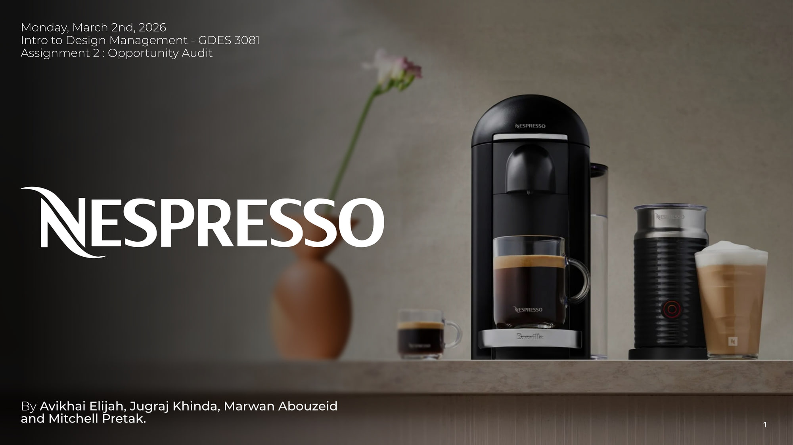
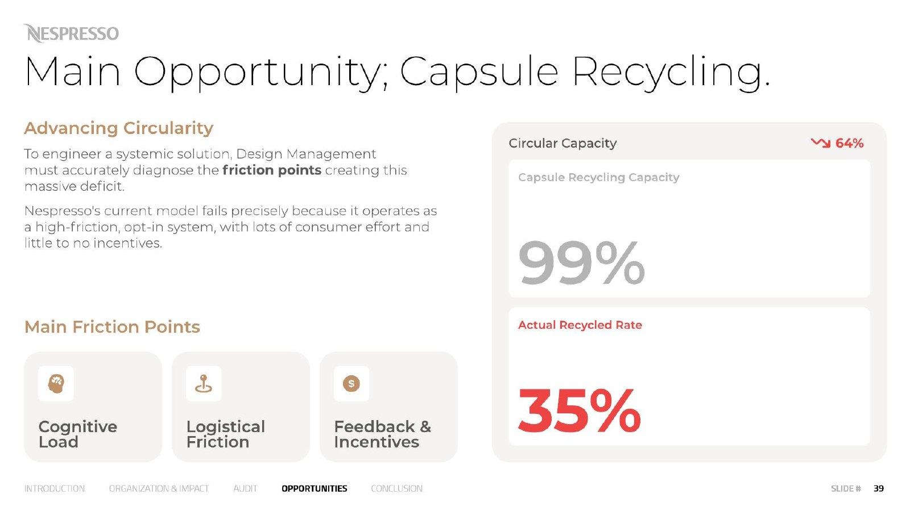
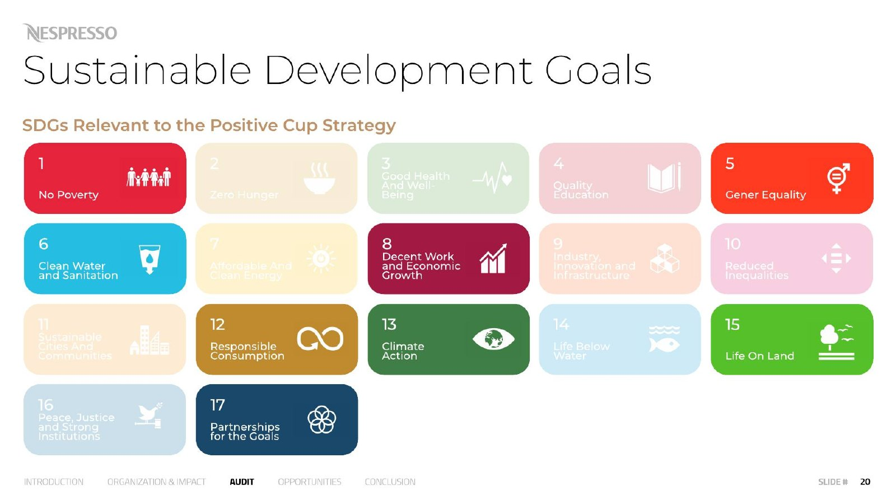
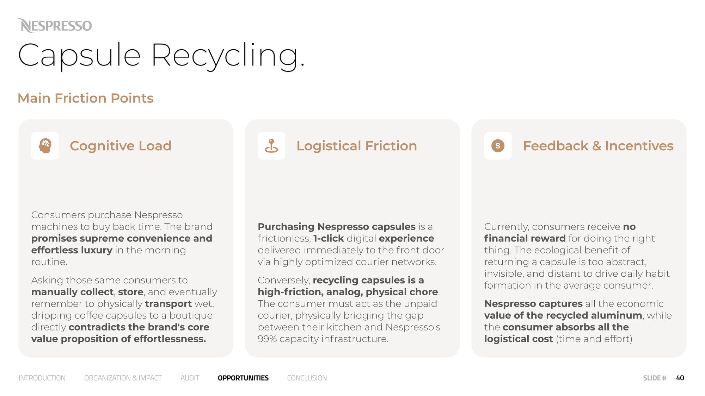
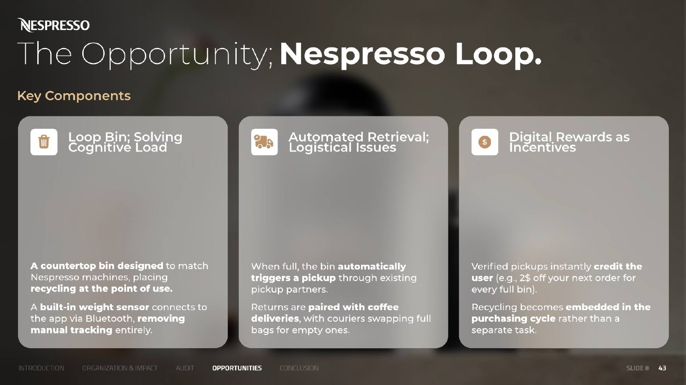
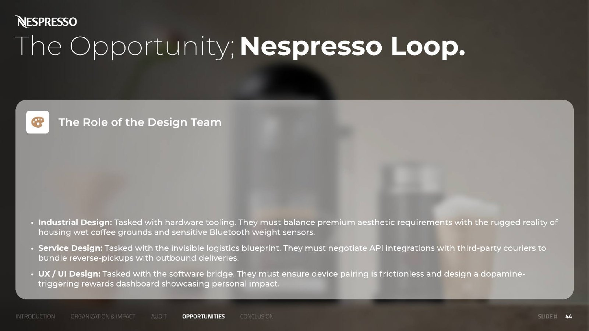
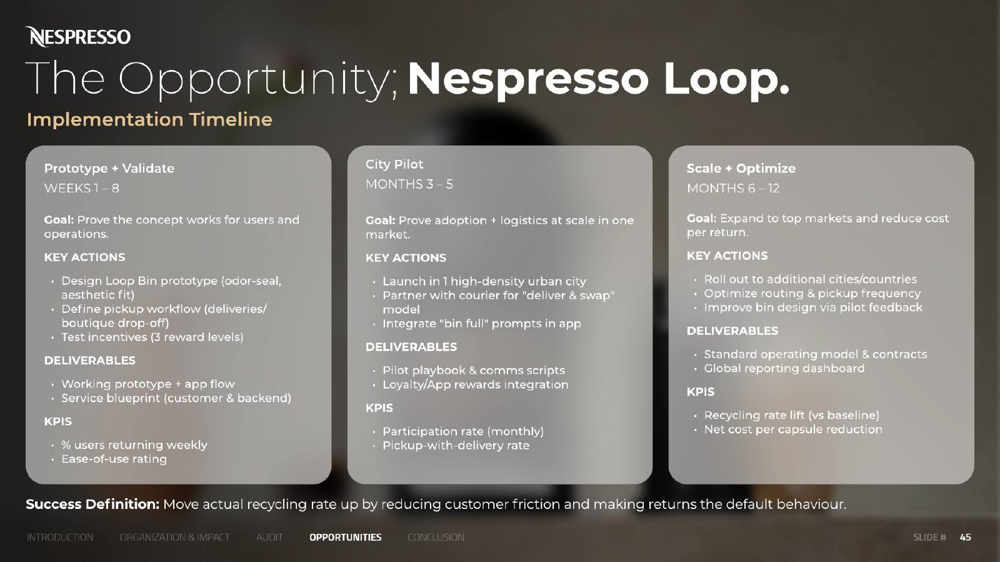

A sustainability audit of Nespresso against the UN Sustainable Development Goals, ending in a proposed service that closes the gap between recycling capacity and what customers actually recycle.

Project deck cover. Research synthesis and charts in this deck used disclosed GenAI tools (GPT 5.2, Gemini 3 Pro); the analysis, judgment and conclusions are the team's.
We audited Nespresso's sustainability strategy against the UN Sustainable Development Goals and found its weakest point in the place its business depends on most: responsible consumption (SDG 12). Nespresso has built the capacity to recycle 99% of its capsules. Customers actually recycle 35%, and that figure moved only from 32% to 35% over two years.
In the deck's words, they "engineered the material, but failed to engineer the human behavior." The system relies entirely on customers to collect, store and physically return wet capsules, which contradicts the effortlessness the brand sells.


My part of the audit was the sourcing: I gathered the documentation on Nespresso's current goals, direction and benchmarks, compared it against the UN SDG framework, and researched the partner organizations Nespresso works with to form its sustainability guidelines. That comparison is what pointed the team at capsule recycling as the main opportunity.

We then diagnosed why the existing return system underperforms and named three friction points: cognitive load (customers have to remember, collect and store capsules), logistical friction (buying is one click, returning is a physical chore), and feedback and incentives (customers get no reward, while Nespresso keeps the value of the recycled aluminum).
Nespresso Loop is a proposed service that turns recycling from a customer chore into something that happens as part of buying coffee. It has three parts, one for each friction point: a countertop Loop Bin with a weight sensor that tracks fill level through the app, automated retrieval where couriers swap full bags for empty ones during coffee deliveries, and digital rewards that credit the customer for every verified pickup.



This is a strategy proposal, not a built service. The deck defines success as moving the actual recycling rate up "by reducing customer friction and making returns the default behaviour," and sets out a staged plan to test that: a prototype phase, a single-city pilot, then scaling.
My specific contributions: I sourced Nespresso's goals, direction and benchmarks, mapped them against the UN SDGs and identified ways for Nespresso to reach its stated targets, researched its partner organizations, and helped iterate the Nespresso Loop recommendation.
AI disclosure, from the deck's own attribution slide: the project made limited use of Generative AI tools (including GPT 5.2 and Gemini 3 Pro) for secondary research synthesis, early ideation, language refinement and AI-assisted chart generation. All core analysis, judgment and conclusions were developed and verified by the project team.